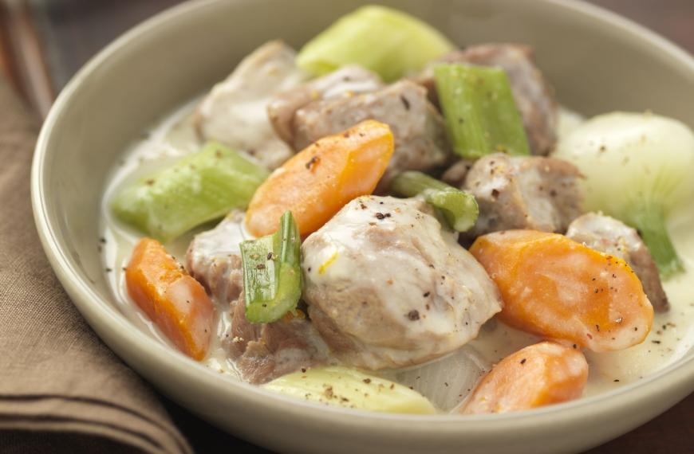

La blanquette ou blanquette de veau ou blanquette de veau à l'ancienne est une recette de cuisine traditionnelle de cuisine française, à base de viande de veau cuite dans un bouillon avec carotte, poireau, oignon et bouquet garni, liée en sauce blanche à la crème et au beurre et aux champignons de Paris.
2 poireaux
1 Gousse d'ail
1 Brin de Céleri
1 Bouquet garni
1 Bouquet persil
Citron
300g Champignons de Paris
3 Cuillères à soupe de Vin blanc sec
1 Cuillère à soupe
1kg Epaule de veau
1 Oignon